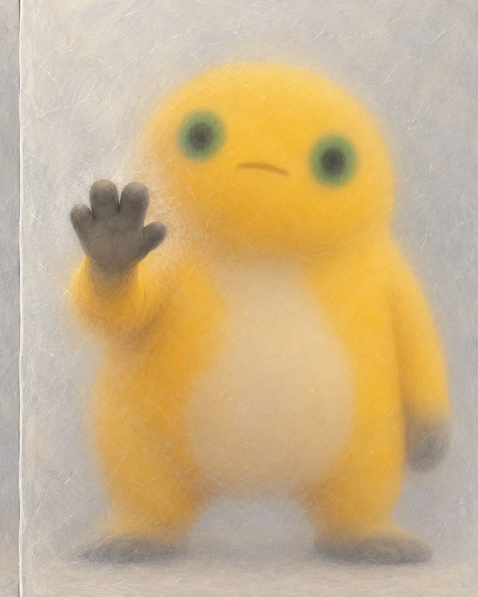
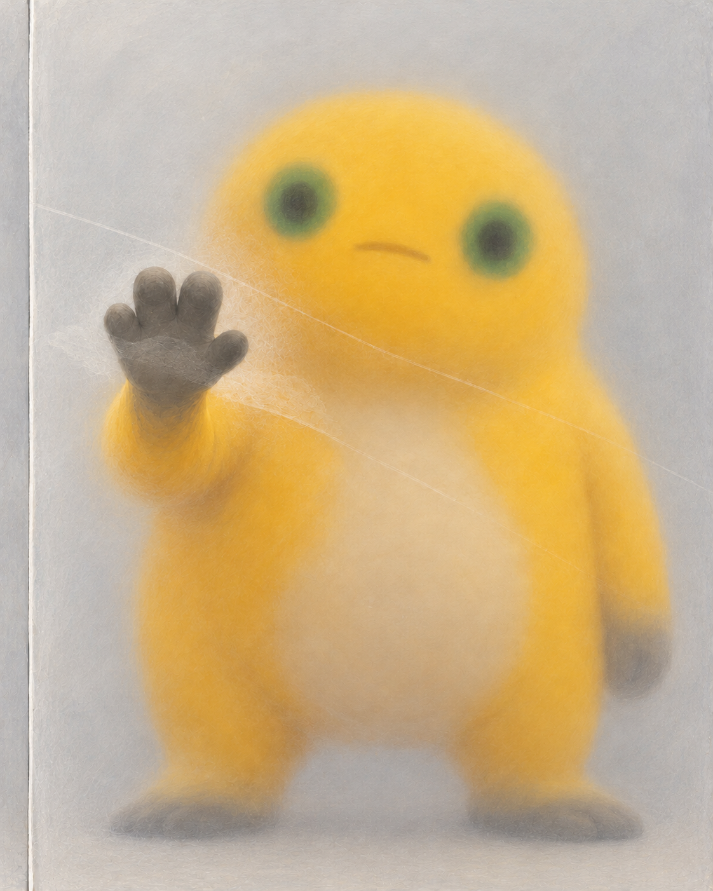
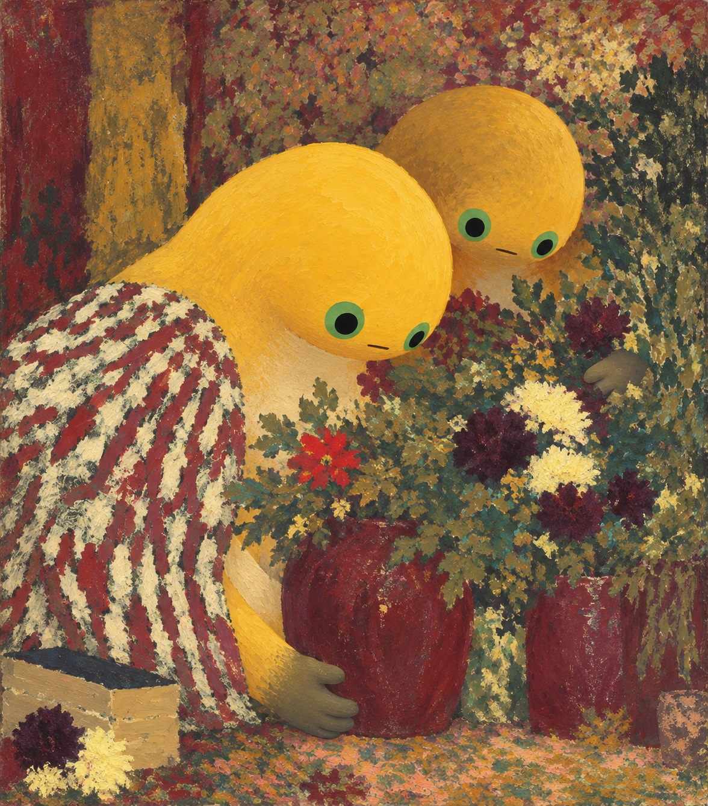
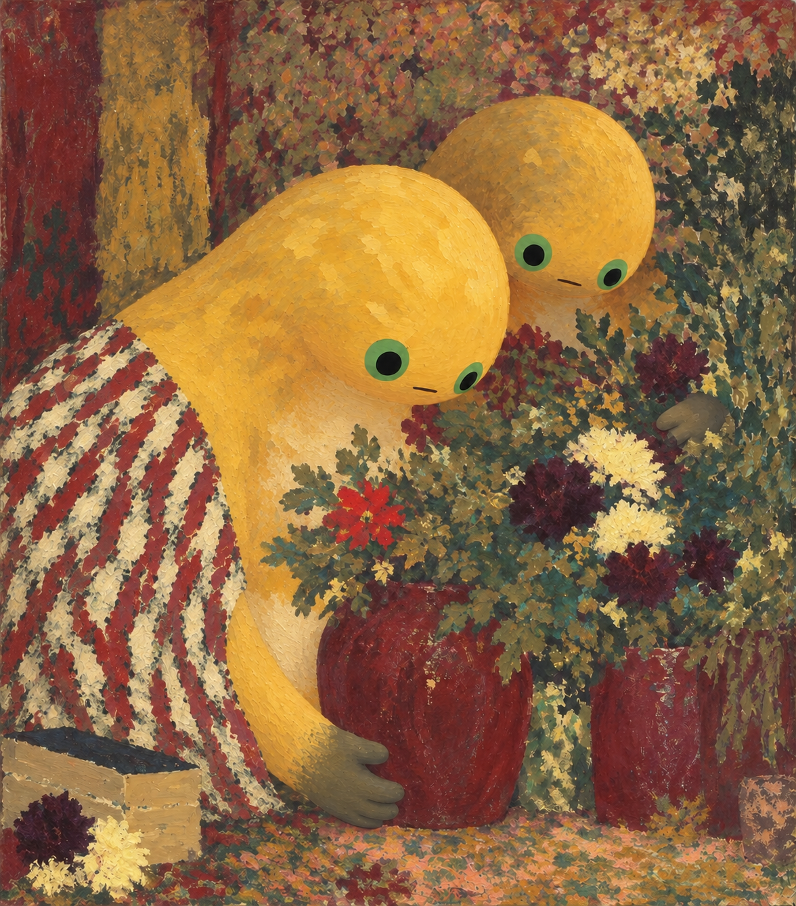
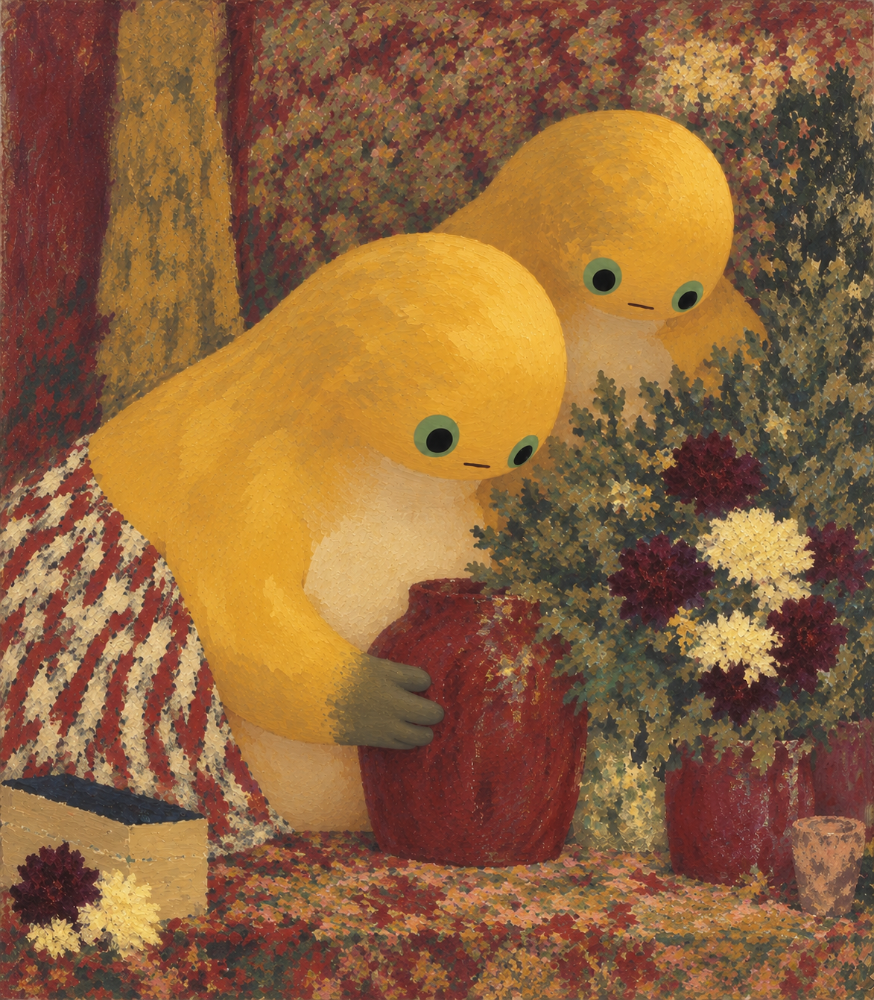

手还在玻璃前，身体还没画出来
北京时间17:04更新：条纹双蛙做到了第三版，宽腹和掌瓶接点有了变化，头身比例与短臂仍未解决。两组继续留作研究稿。
2026年10月13日 · 北京时间17:04阶段更新，保留15:58阶段观察。五张图均为研究稿，不计入馆藏成品。
本文章节
阶段记录
今天15:58记下前一阶段时，两组研究都做到了第二版，也都停在了研究稿。把它们放在一起看，有个相似的问题：表面已经变了，最想改的形体和空间还留在原处。下面先保留这一阶段的观察，再接上17:04的第三版记录。
先看这只手
《手掌比身体近》最初想画一只隔着半透明薄面的奶蛙：灰掌贴近薄面，手腕往肩膀退去，脸和肚子慢慢变软。手与身体始终在同一层玻璃后面。

第一版里，眼睛确实先落在灰掌上，再找到后面的黄身。但指头顶端亮、两侧暗，圆鼓鼓地凸出来，像一只伸到玻璃前的手。原本只想留少量表面痕迹，结果细纹铺满了整张画。

第二版试着让少量痕迹跨过掌缘，压低掌面的凸起。画面清爽了，手到身体的远近也保住了。可上方最明显的斜线绕过了掌内，掌上的碎擦又像手自身的纹理。把图缩小，灰掌仍然浮在前面。这次修改没有回答最初的问题。
花纹留下了，宽身体没有
另一组从维亚尔1895年的《Woman in a Striped Dress》出发。原作里，衣服条纹、花叶和墙面碎色挤在一起，人物靠脸、肩、手与花瓶的遮挡显出前后。
改编时想保留共同低头的姿势，让两只宽梨形奶蛙进入这片花纹，只在灰掌接红瓶的地方留一点深度。

第二版收窄了围布，露出更多黄色肩背。手与瓶的接触没丢，两只奶蛙也仍一起低头。但露出黄色的地方主要还是肩膀和狭长躯干，肚子没有宽起来，手臂依旧从高处伸到瓶旁。笔块变粗了，圆头的亮面和完整轮廓却没松开。

北京时间17:04更新：条纹双蛙后来又做了一次第三版。这次想把宽腹、短臂和花瓶的位置一起重排，允许放弃旧版的手瓶接点。

这次变化看得见：条纹退到左侧，前蛙腹部连成了较大的一片，灰掌不用再伸到桌沿附近，后蛙的浅色胸腹也露了出来。手仍从侧面扶着瓶，瓶底落在桌上。
但大圆头依旧压过肚子，手臂还是从高肩往下弯。缩小看，最先跳出来的仍是两颗亮黄头，身体和花纹分成了前后两层。多露出腹部让结构容易看清了一些，也更清楚地暴露了头身比例和臂根的问题。第三版到这里仍留作研究稿。
下一张先问一个小问题
两组都保留为研究稿，不计入馆藏成品。掌与玻璃留下的问题仍是怎样压平指头的明暗。条纹双蛙则先停下沿着旧图的连续修补：若继续，先拿掉花纹，只摆头、腹、瓶三块大形，看宽腹和低位短臂能不能连起来，再考虑衣纹与花叶。这一步还没有执行。
原作出处：Édouard Vuillard，Woman in a Striped Dress，1895，National Gallery of Art, Washington，1983.1.38。Courtesy National Gallery of Art, Washington。本文五张研究图为AI辅助数字图像，玻璃与油彩均为画面效果描述。
来源与阅读
- Édouard Vuillard · Woman in a Striped Dress · NGA ↗
1895，National Gallery of Art, Washington，1983.1.38。Courtesy National Gallery of Art, Washington。原作仅通过官方链接引用。
资料核对日期：2026-10-13